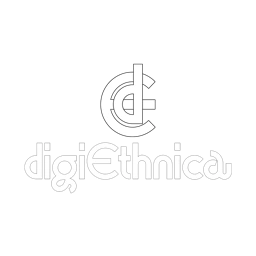

Traditional Music
Instrumen musik tradisional sebagai fondasi utama setiap pertunjukan.

Collaborate ↗Menghadirkan budaya ke panggung masa depan melalui musik, teknologi, visual, dan pertunjukan kreatif.
Showreel
Sebuah ruang untuk memperlihatkan bagaimana tradisi, musik, visual, dan teknologi bertemu dalam satu pengalaman pertunjukan.
Tentang DIGIETHNICA
DIGIETHNICA adalah kolektif kreatif yang memadukan musik etnis, teknologi digital, visual multimedia, dan budaya pertunjukan modern.
Kami percaya bahwa kolaborasi menjadi kunci untuk membangun pengalaman yang autentik—menyatukan tradisi dengan inovasi, serta menghadirkan karya yang relevan bagi generasi masa kini.
“Budaya adalah fondasi, teknologi adalah jembatan, kreativitas adalah masa depan.”
Performance Elements
Setiap elemen dirancang untuk menjaga karakter budaya sekaligus membuka ruang bagi eksplorasi baru.
Instrumen musik tradisional sebagai fondasi utama setiap pertunjukan.
Lapisan suara elektronik yang memperkaya tekstur dan energi panggung.
Fusi ritme dan melodi dari berbagai tradisi musik global.
Pengalaman yang menghubungkan audiens, performer, visual, dan teknologi.
Selected Work
Festival budaya, government event, corporate event, live performance, cultural collaboration, dan multimedia performance.
Cocok Untuk
Merayakan identitas lokal dengan pendekatan kontemporer.
Membangun pengalaman brand yang autentik dan berkesan.
Membawa cerita budaya Indonesia ke panggung global.
Budaya tidak hanya perlu dilestarikan. Budaya juga perlu dihadirkan kembali dengan cara yang relevan bagi generasi masa kini.
Start a Project ↗